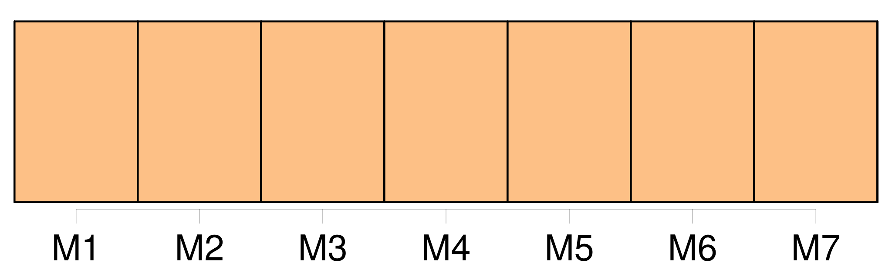

Longueur nb maillons : 44 mentions |
  |
— Sur la bande frayée à travers les mauvaises herbes, et détrempée par une averse récente, [on] ne voyait aucune empreinte de pas humain, et les brindilles de broussailles, chargées de gouttelettes brillantes, ne paraissaient pas avoir été écartées depuis longtemps. [5 phrases] Des nids d'hirondelles oblitéraient le faîte des cheminées et les angles des fenêtres, et, sans un mince filet de fumée qui sortait d'un tuyau de briques et se tortillait en vrille comme dans ces dessins de maisons que les écoliers griffonnent sur la marge de leurs livres de classe, [on] aurait pu croire le logis inhabité : maigre devait être la cuisine qui se préparait à ce foyer, car un soudard avec sa pipe eût produit des flocons plus épais. [1 phrases] En poussant le vantail mobile de la porte, qui ne cédait pas sans protester et tournait avec une évidente mauvaise humeur sur ses gonds oxydés et criards, [on] se trouvait sous une espèce de voûte ogivale plus ancienne que le reste du logis, et divisée par quatre boudins de granit bleuâtre se rencontrant à leur point d'intersection à une pierre en saillie où se revoyaient, un peu moins dégradées, les armoiries sculptées à l'extérieur, trois cigognes d'or sur champ d'azur, ou quelque chose d'analogue, car l'ombre de la voûte ne permettait pas de les bien distinguer. [1 phrases] De ce porche, sous lequel s'ouvraient deux portes, l'une conduisant aux appartements du rez-de-chaussée, l'autre à une salle qui avait pu jadis servir de salle des gardes, [on] débouchait dans une cour triste, nue et froide, entourée de hautes murailles rayées de longs filaments noirs par les pluies d'hiver. [10 phrases] Pourtant, si l' [on] eût persisté, sans redouter les égratignures des broussailles et les soufflets des branches, à suivre jusqu'au bout l'antique allée devenue plus obstruée et plus touffue qu'une sente dans les bois, [on] serait arrivé à une espèce de niche de rocaille figurant un antre rustique. [2 phrases]
À ses pieds croupissait, sous une couche verte de lentilles d'eau dans une conque de pierre, une flaque brune, résidu des pluies ; car le mufle de lion, qu' [on] pouvait encore discerner au besoin, ne vomissait plus d'eau, n'en recevant pas des conduits bouchés ou détruits. Ce cabinet grotesque, comme [on] disait alors, témoignait, tout ruiné qu'il était, d'une certaine aisance disparue et du goût pour les arts des anciens possesseurs du castel. [4 phrases]
En revenant vers le castel, [on] apercevait la façade opposée plus ravagée et plus dégradée que celle qui vient d'être décrite, les derniers maîtres ayant tâché de garder au moins l'apparence, et concentré leurs faibles ressources sur ce côté. [2 phrases] Lorsqu' [on] voulait pénétrer dans l'habitation, [on] rencontrait un énorme escalier à rampe de bois taillée en balustre. [3 phrases] [On] y devinait encore une suite d'Hercules terminés en gaine supportant une corniche à modillons d'où partait, en s'arrondissant, un berceau de feuillages festonnés de pampres laissant apercevoir un ciel passé de couleur et géographié d'îles inconnues par l'infiltration des eaux de la pluie. [2 phrases] Une porte verte, dont la serge avait jauni et n'était plus retenue que par quelques clous dédorés, donnait passage dans une pièce qui avait pu servir de salle à manger aux temps fabuleux où l' [on] mangeait dans ce logis désert. [10 phrases]
Une fine couche grise, sur laquelle le doigt eût pu tracer des caractères, en couvrait la surface, et montrait qu' [on] n'y mettait pas souvent le couvert. [9 phrases] La ferme flamande, avec son puits festonné de houblon, ne se discernait presque plus, et, de la figure blafarde du chasseur à la poursuite des halbrans, la bouche rouge et l'œil noir, apparemment d'un meilleur teint que les autres nuances, avaient seuls conservé le coloris primitif, comme un cadavre à la pâleur de cire dont [on] a vermillonné la bouche et ravivé les sourcils. [6 phrases] Un lit à colonnes en quenouille, fermé par des rideaux de brocatelle coupés à tous leurs plis et dont les ramages verts et blancs se confondaient dans une même teinte jaunâtre, occupait un coin de la pièce, et l' [on] n'eût osé en relever les pentes de peur d'y trouver dans l'ombre quelque larve accroupie ou quelque forme roide dessinant, sous la blancheur du drap, un nez pointu, des pommettes osseuses, des mains jointes et des pieds placés comme ceux des statues allongées sur des tombeaux ; tant les choses faites pour l'homme et d'où l'homme est absent prennent vite un air surnaturel!!
[On] eût pu supposer aussi qu'une jeune princesse enchantée y reposait d'un sommeil séculaire comme la Belle au bois dormant, mais les plis avaient une rigidité trop sinistre et trop mystérieuse pour cela et s'opposaient à toute idée galante. [3 phrases]
De grands rideaux, fripés dans leurs cassures et qui se seraient déchirés si [on] eût voulu les faire glisser sur leurs tringles dévorées de rouille, diminuaient encore cette lumière de crépuscule et ajoutaient à la mélancolie du lieu. En ouvrant la porte qui se trouvait au fond de cette dernière chambre, [on] tombait en pleines ténèbres, [on] abordait le vide, l'obscur et l'inconnu. [2 phrases] Dès le seuil, une odeur de relent, un parfum de moisissure et d'abandon, le froid humide et noir particulier aux lieux sombres, vous montaient aux narines comme lorsqu' [on] lève la pierre d'un caveau et qu' [on] se penche sur son obscurité glaciale. [12 phrases]
Ses oreilles avaient été coupées au ras de la tête et sa queue au ras de l'échine, ce qui lui donnait la mine de ces chimères japonaises qu' [on] place dans les cabinets parmi les autres curiosités, ou bien encore de ces animaux fantastiques à qui les sorcières, allant au sabbat, confient le soin d'écumer le chaudron où bouillent leurs philtres. [3 phrases] La marmite bouillait toujours, et le chat restait immobile à son poste, comme une sentinelle qu' [on] a oublié de relever. [2 phrases] « Bien, bien, Béelzébuth, dit le vieillard en se courbant pour passer à deux ou trois reprises sa main calleuse sur le dos pelé du chat, afin de n'être pas en reste de politesse avec un animal ; je sais que tu m'aimes, et nous sommes assez seuls ici, mon pauvre maître et moi, pour n'être pas insensibles aux caresses d'une bête dénuée d'âme, mais qui pourtant semble [vous] comprendre. [2 phrases] [On] eût dit que les salamandres prenaient leurs ébats et dansaient des sarabandes dans les flammes. [16 phrases] Il est vrai que ce château est si triste qu' [on] ne saurait s'ennuyer davantage ailleurs. [4 phrases]
[On] voyait qu'ils se connaissaient de longue main et se tenaient souvent compagnie dans la solitude du château. [5 phrases]
Son geste était endormi et mort, sa contenance inerte, et l' [on] voyait qu'il lui était parfaitement égal d'être ici ou là, parti ou revenu. [5 phrases] Ainsi accoutré de ces vêtements, peut-être fort à la mode au commencement de l'autre règne, le jeune baron avait l'air à la fois ridicule et touchant ; [on] l'eût pris pour son propre aïeul. [7 phrases] Celui -ci détacha la marmite de la crémaillère, en versa le contenu sur son pain taillé d'avance dans une écuelle de terre commune qu'il posa devant le Baron ; c'était ce potage vulgaire qu' [on] mange encore en Gascogne, sous le nom de garbure ; puis il tira de l'armoire un bloc de miasson tremblant sur une serviette saupoudrée de farine de maïs et l'apporta sur la table avec la planchette qui la soutenait. [5 phrases] [On] eût dit qu'il comprenait les pensées du Baron et cherchait à lui témoigner sa sympathie. [1 phrases]
Pierre se tenait debout à quelque distance, immobile comme ces longues et roides statues de granit qu' [on] voit aux porches des cathédrales, respectant la rêverie de son maître et attendant qu'il lui donnât quelque ordre. [11 phrases]
[On] eût dit une bouche de vampire empourprée de sang. [2 phrases] Quelquefois le vitrage semblait près de ployer et de s'ouvrir, comme si l' [on] eût fait une pesée à l'extérieur. [17 phrases] Qu'eût [-on] dit, en effet, de voir le baron de Sigognac accoutré comme un gueux de l'Hostière ou comme un cueilleur de pommes du Perche?? [27 phrases] — [On] ne saurait mieux élucider mes paroles, répondit l'acteur, et vous parlez de cire. [10 phrases]
Quoiqu' [on] ne fût encore qu'au début de l'automne, un peu de feu était nécessaire pour sécher les vêtements humides de ces dames ; d'ailleurs la nuit était fraîche et l'air sifflait par les boiseries disjointes de cette pièce inhabitée. [3 phrases] — Qu'à cela ne tienne, répliqua le Pédant ; si, au théâtre, l' [on] nous sert des poulets de carton et des bouteilles de bois tourné, nous nous précautionnons, pour la vie ordinaire, de mets plus substantiels. [14 phrases] Un air plus tiède et plus vivace circulait dans cette vaste salle, où l' [on] ne respirait habituellement que l'humidité moisie du sépulcre. [21 phrases]
Si elle n'éblouissait pas, elle charmait, ce qui a bien [son] avantage. [14 phrases] Le caractère féminin avait presque disparu de cette figure, dans les rides de laquelle [on] eût retrouvé bien des histoires, si l' [on] eût pris la peine de les y chercher. [3 phrases] Les principaux emplois de la comédie s'y trouvaient représentés, et, s'il manquait un personnage, [on] racolait en route quelque comédien errant ou quelque amateur de théâtre, heureux de se charger d'un petit rôle, et d'approcher ainsi des Angéliques et des Isabelles. |

|
La ressource peut être téléchargée sur la page Ortolang
Si vous avez des questions ou vous voyez des erreurs, merci d'envoyer un mail à silvia.federzoni89@gmail.com
Site développé par S. Federzoni (contact)